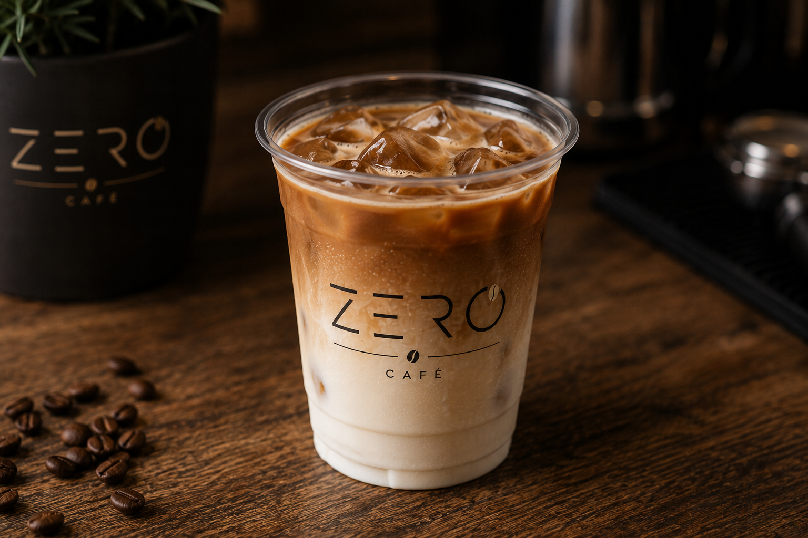
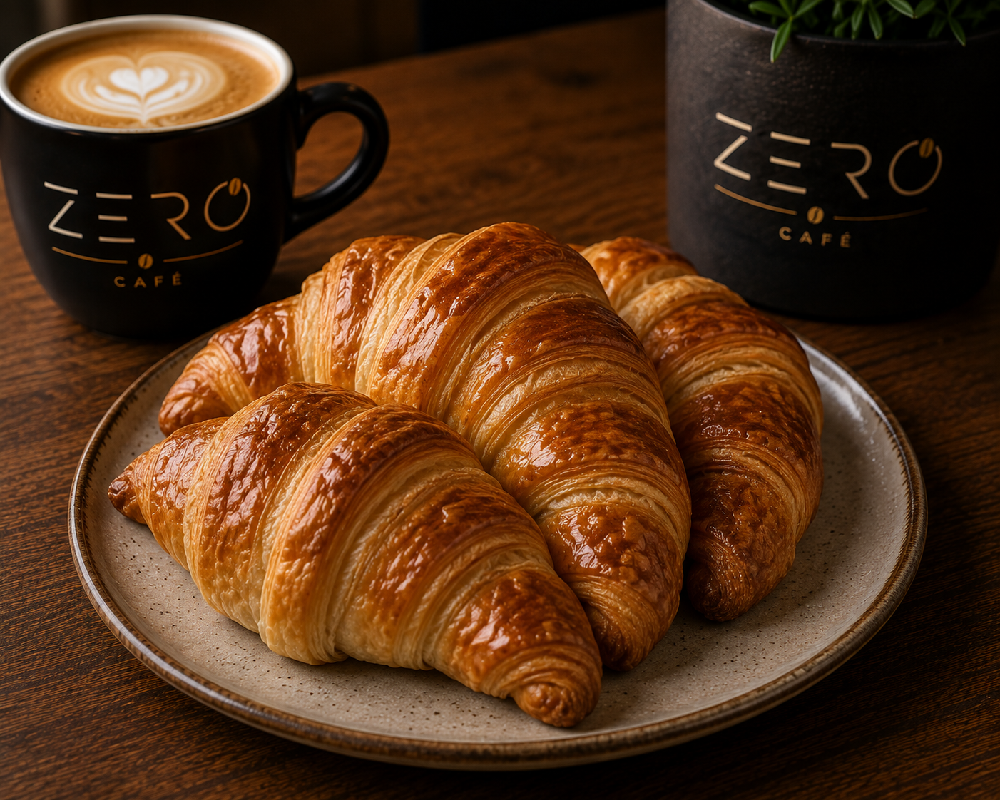
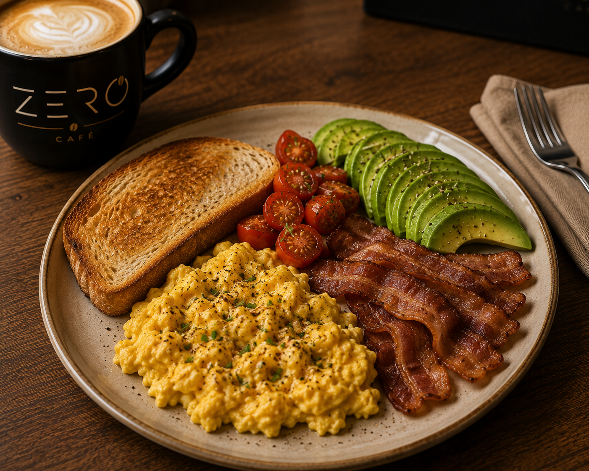

latte
El latte es un estilo de cafe menos fuerte en el cual se mezcla un 20% de cafe y un 80% de leche de esta manera encontramos un punto medio para la gente que recien esta empezando a tomar cafe, este es tambien mas conocido como cafe con leche
El latte es un estilo de cafe menos fuerte en el cual se mezcla un 20% de cafe y un 80% de leche de esta manera encontramos un punto medio para la gente que recien esta empezando a tomar cafe, este es tambien mas conocido como cafe con leche
El capuccinop contiene el mismo porcentaje de leche y cafe que el latte lo que si cambia es la espuma y el acompañamiento, el capuccino tiene una leche mas espumada acompañado con cacao y canela lo cual cambia completamente su sabor

A diferencia del café helado tradicional (que suele ser café filtrado que se deja enfriar) ,el iced latte mantiene la intensidad del expreso recién extraído mezclado directamente con la leche bien fría.
Es una rodaja de pan tostado sobre la que se unta o distribuye Palta pisada. Se sazona con sal, pimienta y un chorrito de aceite de oliva,y se acompañarlo con huevo revuelto

Son la versión argentina del croissant francés, pero generalmente más pequeñas, húmedas y con un toque dulce o mantecoso.

Es un desayuno súper completo y abundante de estilo salado/dulce. incluye: huevos revueltos, panceta, tostadas, tomate cherry y palta pisada